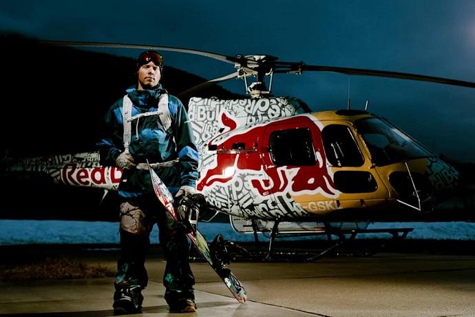
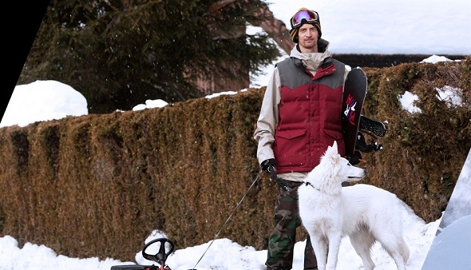
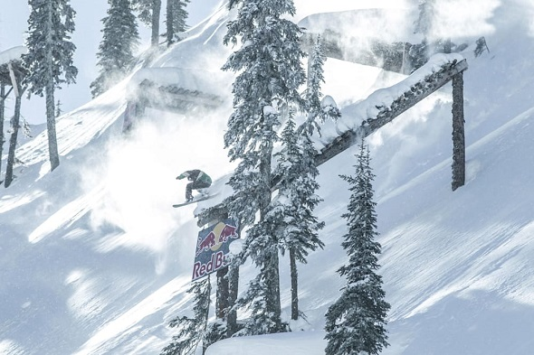
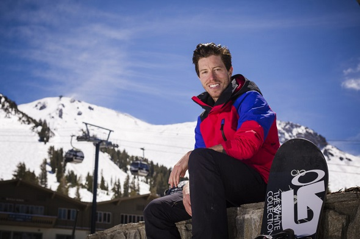
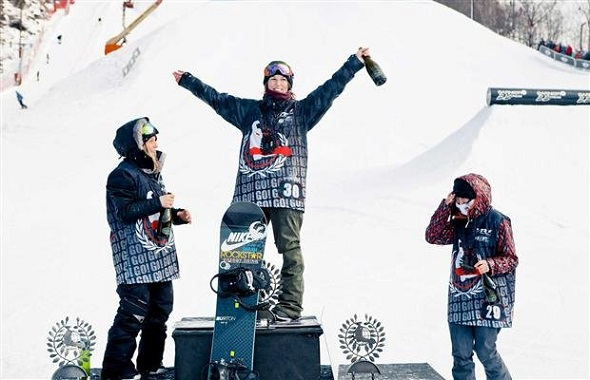

TOP - 5 сноубордистов на основании рэйтинга RedBull 10 лучших сноубордистов мира
Возглавляет наш список суперзвезд сноуборда никто иной, как тяжеловес бэккантри Трэвис Райс № 1

Могли ли быть какие-то сомнения в том, что Трэвис Райс возглавит этот список? Все проделанное им за
последние двенадцать лет определяет будущее сноубординга. Многие достижения просто нельзя оставить без
внимания.
Обратимся к списку заслуг Трэвиса прямо сейчас.
Четыре медали X-Games, первый дабл-корк на соревнованиях, первый дабл на Чэдс Гэп, призовое место на каждом
6-звездном Международном туре по сноубордингу TTR, два автобиографических фильма, которые коренным образом
изменили наш взгляд на сноубординг, участие в проекте Absinthe, появление в фильме «Deeper», где его
выступление затмило все остальные, а также награды и премии самых разных изданий: «выбор сноубордистов»,
«выбор читателей», премия National Geographic Awards.
Трэвис Райс убедительно доказал, что он является лучшим сноубордистом не только в своем поколении, но и за
всю историю этого вида спорта, начиная со сногсшибательного дебютного бэксайд родео на 110-футовом трамплине
на Superpark в 2001 году, и заканчивая разведкой и последующим покорением гигантских, с пятидесятиградусным
спуском, белых, как пломбир с орехами склонов гор Тодрилло для съемок фильма «Искусство
полета» (Art Of Flight).
На второй строчке нашего рейтинга – самый одаренный райдер на планете, Николас Мюллер № 2

Тот день, когда мне довелось покататься вместе с Николасом Мюллером, запомнится мне навсегда.
В
начале 2000-х годов меня командировали в лагерь команды Burton в Зёльдене, но плохая погода слегка нарушила
наши планы. Зато
я смог покататься в свое удовольствие – вся гора была в моем распоряжении.
Итак, я наслаждался как мог, катаясь в искусственном пайпе, уже разрушавшемся под дождем, когда появился
Николас Мюллер со своим другом Фредди Кальберматтеном. Они делали то, на что у большинства профессиональных
сноубордистов просто не хватает времени: катались для себя.
Николас же смог построить на этом свою
спортивную
карьеру. Он живет в соответствии со словами из фильма Дэвида Бенедека «91 Words
for Snow» («91 слово о
снеге»):
«В сноубординге есть лишь одно правило: тебе должно нравиться то, что ты делаешь». Наблюдая за
Николасом на
склоне, за его движениями, понимаешь, что он совершает их не задумываясь, инстинктивно. Его тело действует
интуитивно, и это делает его стиль совершенно особенным.
Позвольте представить номер три в рейтинге – победитель Red Bull Ultra Natural этого года Гиги Рюф № 3

Гиги Рюф – настоящий художник, и именно поэтому он занимает третье место в нашем рейтинге.
Нравится ли вам
его стиль или нет, но этот райдер вытворяет в горах такое, чему всем остальным следовало бы у него
поучиться.
Джастин Хостинек из компании Absinthe долгое время работал с Гиги и утверждает, что все это
благодаря тому,
что внутри Гиги по-прежнему остается ребенком. Терье говорит, что его стиль катания напоминает игру, и, на
мой взгляд, это и есть его ключ к успеху.
Пикассо говорил, что все
мы – художники от рождения, нужно лишь не
потерять этот талант с возрастом.
Гиги – один из немногих взрослых, которым удалось сохранить творческую жилку и способность получать
удовольствие от преодоления трудностей взрослой жизни, и именно это ясно прослеживается в его манере
кататься.
Вы можете любить его или не любить, но факт остается фактом: этот парень – настоящая звезда № 4

Когда Шона Уайта взяли под стражу в Нэшвилле за пребывание в состоянии опьянения в общественном месте и
вандализм, стало ясно, что он – обычный человек со своими проблемами, а не только великий сноубордист. Но на
четвертое место в рейтинге его поместили вовсе не за это, а за
высокие достижения в сноубординге.
Компания Burton начала спонсировать Шона, когда ему было всего 7 лет. Уже тогда он демонстрировал настолько
высокое мастерство и чувство стиля, что привлек внимание многих профессионалов и СМИ. Очевидно, немалую роль
в этом сыграл тот факт, что мальчика тренировал сам Тони Хоук.
В своей карьере Шон движется именно по стопам Тони, и делает это весьма успешно: как и его учитель, он
преуспел как в спорте, так и в бизнесе, став хорошо узнаваемым «лицом» мировых брендов. Да что там, он
участвовал в ток-шоу Опры, «The Late Show», обедал с Обамой, давал интервью Ларри Кларку , «засветился» на
обложке журнала «Rolling Stone» обнаженным по пояс, и постепенно прокладывает путь в Голливуд.
Итак, Шон Уайт стал довольно дорогим «товаром», взять хотя бы его последнюю сделку с Burton на сумму 10 млн
долларов. Фактически, еще в 2008 году, когда Шон только-только получил право покупать алкоголь по законам
США, журнал «Forbes» сообщил, что заработок молодого спортсмена перевалил за 9 млн долларов только на одной
рекламе. Кто еще из сноубордистов может похвастаться собственными марками жевательной резинки, одежды и
товаров для дома, названной в его честь видеоигрой и, что самое главное, линейкой самокатов под маркой
Shaun
White Supply?
На пятое место мы поместили сноубордистку из Канады Спенсер О’Брайен № 5

Как и в любом виде спорта, в сноубординге часто бывает так, что после периода активного
совершенствования
физических и технических достижений наступает своеобразное «затишье»: кривая развития выходит на плато.
Это
плато может иметь длину в несколько лет, и лишь затем появляются несколько райдеров, которые покоряют
новые
высоты мастерства. Спенсер О’Брайен – одна из тех, кому это удалось. Она не только достигла
личного успеха,
но и существенно «подняла планку» для женского сноубординга в целом.
Спенсер родилась в городе Кортни, расположенном на острове Ванкувер на западном побережье
Канады. Заниматься
сноубордингом она начала под влиянием своего отца и старшей сестры Меган, которая также стала
профессиональным райдером, а заодно – примером для подражания и источником вдохновения для младшей сестры в
раннем возрасте. Спенсер начала участвовать в соревнованиях в 11 лет. Это были соревнования местного
масштаба, и юная спортсменка, по ее собственным словам, обычно занимала последние места. Тем не менее, столь
раннее начало карьеры помогло ей обрести целеустремленность и волю к победе и, в конце концов, стать
невероятно стильной и техничной сноубордисткой, стабильно показывающей блестящие результаты вот уже
несколько сезонов.
Несмотря на малообещающий дебют, сейчас за плечами О’Брайен уже множество выдающихся результатов:
многократная победительница DewTour, победительница O’Neill Evolution 2012, чемпионка мира в слоупстайле
2012 года, победительница Burton US Open 2013 в слоупстайле и победительница Мирового чемпионата по
сноубордингу Международной федерации лыжного спорта (FIS), который проводился в преддверии Олимпийских игр.